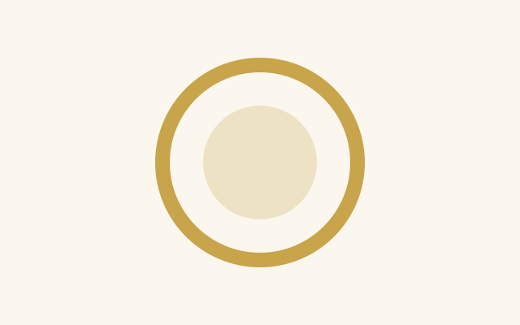

Mara Quill
Bellkeeper for nineteen years. Has never missed the midnight of the fair, and does not intend to start because of a knee.
One night, told twice
Mara Quill, bellkeeper of Corren, climbs the two hundred and twelve steps of the tower with a lamp and a bad knee.
Climb with MaraTobin Marrow, who has dug wells for thirty years, is lowered into the dry one under the tower to find out why the ground is humming.
Go down with TobinRead either chapter first. They are the same length, they cover the same hour, and they end on the same word. The toggle in the corner changes the light you read by, not the story.

Corren
The tower was built over the well in 1611, on the theory that a bell keeps bad things down. Nobody has tested the theory since, because nobody has needed to. On the night of the winter fair, that changes.
Two people and a bell. The cards on the left and right keep the colours of their chapters whatever the light; the bell belongs to both.
Bellkeeper for nineteen years. Has never missed the midnight of the fair, and does not intend to start because of a knee.

Cast in 1611, four tonnes, named Patience by someone with a sense of humour. It has not been silent at midnight in four hundred years.
Well-digger, retired, called back for one job. Does not believe in humming ground, and would like to stop hearing it.
About twenty minutes a chapter. Each page is one sitting, and the two together are the whole story.
Whichever face the page is wearing when you arrive. People who read the ascent first tend to trust the bell. People who read the descent first tend not to.
Both chapters are complete. There is no third; midnight only happens once.